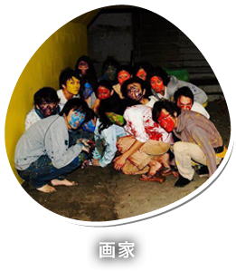

画家
16人のイイ匂いのする連中による、嬉しい音楽。音楽の知識や好み、楽器の技術や経験、年齢、性別、背景を問わず、音を鳴らすことを楽しむところの猛者が集結。
ライブハウスからクラブ、芸術祭から野外フェス、レイヴからファッションショーに、スペシャ列伝まで。ジャンルを選ばずシーンを問わぬ、なんでもござれのあばずれバンド。
曰く、夢告正規無秩序生命力垂れ流し楽団。
素敵にして酔狂。

16人のイイ匂いのする連中による、嬉しい音楽。音楽の知識や好み、楽器の技術や経験、年齢、性別、背景を問わず、音を鳴らすことを楽しむところの猛者が集結。
ライブハウスからクラブ、芸術祭から野外フェス、レイヴからファッションショーに、スペシャ列伝まで。ジャンルを選ばずシーンを問わぬ、なんでもござれのあばずれバンド。
曰く、夢告正規無秩序生命力垂れ流し楽団。
素敵にして酔狂。